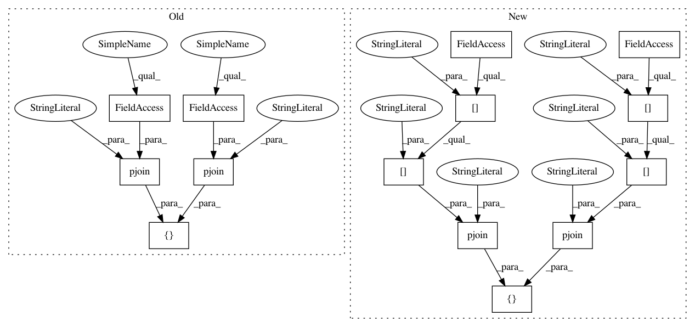

254c728b144e998bd3408557fb27877b524dc906,mltsp/tests/test_flask_app.py,FlaskAppTestCase,test_prediction_page,#FlaskAppTestCase#,2342
Before Change
"featureset_name": "abc123",
"parameters": {},
"name": "TEMP_TEST01"}).run(conn)
dsts = [pjoin(cfg.UPLOAD_FOLDER, "TESTRUN_215153.dat"),
pjoin(cfg.UPLOAD_FOLDER, "TESTRUN_215153_metadata.dat")]
rv = fa.predictionPage(dsts[0],
project_name="abc123",
model_key="TEMP_TEST01",
model_name="TEMP_TEST01",
After Change
"featureset_name": "abc123",
"parameters": {},
"name": "TEMP_TEST01"}).run(conn)
dsts = [pjoin(config["paths"]["upload_folder"],
"TESTRUN_215153.dat"),
pjoin(config["paths"]["upload_folder"],
"TESTRUN_215153_metadata.dat")]
rv = fa.predictionPage(dsts[0],
project_name="abc123",
model_key="TEMP_TEST01",
model_name="TEMP_TEST01",
In pattern: SUPERPATTERN
Frequency: 3
Non-data size: 14
Instances
Project Name: cesium-ml/cesium
Commit Name: 254c728b144e998bd3408557fb27877b524dc906
Time: 2016-02-10
Author: stefanv@berkeley.edu
File Name: mltsp/tests/test_flask_app.py
Class Name: FlaskAppTestCase
Method Name: test_prediction_page
Project Name: cesium-ml/cesium
Commit Name: 254c728b144e998bd3408557fb27877b524dc906
Time: 2016-02-10
Author: stefanv@berkeley.edu
File Name: mltsp/tests/test_flask_app.py
Class Name: FlaskAppTestCase
Method Name: test_prediction_proc
Project Name: cesium-ml/cesium
Commit Name: 5b5fb4c657f0cdf4fe404aa9daaf99aca83d01cf
Time: 2016-02-24
Author: brettnaul@gmail.com
File Name: mltsp/tests/test_transformation.py
Class Name:
Method Name: